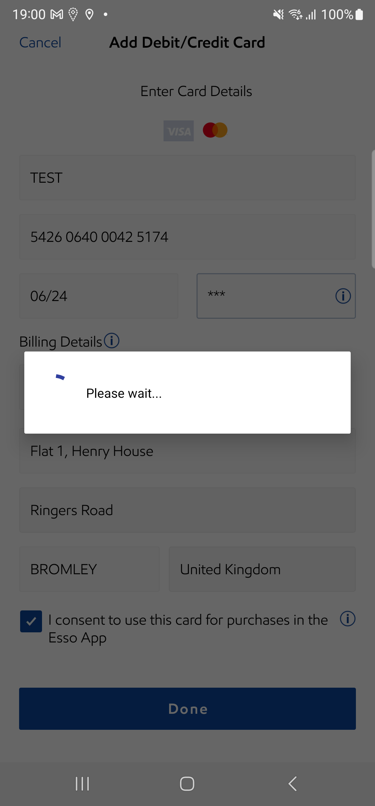

-
SSO
6:52:17 pm / 00:08:47:439 Fail
SSO
06.18.2024 6:52:17 pm 06.18.2024 7:01:04 pm 00:08:47:439 · #test-id=1PassVerify if SSO Facebook based Esso app user navigate to 'Forgot PIN' screen to trigger a reset PIN email from confirm payment screenWhen user taps on start button in LIDAnd user is navigated to Select your pump screenAnd user selects pump number "2" to start fuellingAnd user selects the pump from 'Select your Pump' page and taps on continue buttonWhen user tap on Continue button in MFA screenThen the user is navigated to Confirm payment screenAnd user confirms card paymentWhen user taps on Forgot your pin linkThen user is navigated to Forgot Pin ScreenAnd Veirfy all the elements are present in Forgot Pin ScreenAnd user taps on send button in Forgot Pin ScreenThen verify the confirmation pop up is displayedAnd tap on Ok ButtonThen the user is navigated to Confirm payment screenPassVerify if SSO Facebook based Esso app user navigate to 'Forgot PIN' screen to trigger a reset PIN emailGiven user is on NLID screenAnd user taps on More button in tab barWhen user navigates to Account screenThen user clicks on edit in the pin without phoneWhen user taps on Forgot your pin linkThen user is navigated to Forgot Pin ScreenAnd Veirfy all the elements are present in Forgot Pin ScreenAnd user taps on send button in Forgot Pin ScreenThen verify the confirmation pop up is displayedAnd tap on Ok ButtonThen user verifies the user redirected to Account screenPassCheck Whether System displays the confirmation for the transactionGiven user is on NLID screenWhen user taps on start button in LIDAnd user is navigated to Select your pump screenAnd user selects pump number "1" to start fuellingAnd user selects the pump from 'Select your Pump' page and taps on continue buttonAnd user verify the MFA screenWhen user tap on Continue button in MFA screenThen the user is navigated to Confirm payment screenThen user verify the confirms the payment screenWhen user confirms card paymentAnd Enter pin in the fuelling flowAnd Verify that Please wait screen is displayedThen Start fuelling screen now is displayedPassApp should allow the Facebook user to register again with the deleted accountWhen user is on NLID screenAnd user taps on More button in tab barWhen user navigates to Account screenAnd user verifies the Account title in the account sectionAnd user taps on delete your account in account screenAnd user verifies the delete your account screenAnd user taps on delete in delete your account screenAnd user verifies the delete your account popupAnd tap on Ok ButtonThen user verifies the app redirects back to NLIDAnd user taps on "Facebook" icon in the NLIDAnd I enter SSO login details for "Facebook"Then user navigates to the SSO registration screenThen user registers the SSO user by accepting the terms and conditions screenWhen user is on NLID screenPassSSO User - Verify whether app is displaying the Credit/Debit Card info icon pop-up on the Add Payment Method screenGiven user is on NLID screenAnd user validates the add payment link present in LID screenWhen user taps on add payment link present in LID screenThen user verifies the Add Payment method screenThen user verifies the info icon present and taps on the buttonWhen user verifies the text present under info icon and taps on ok buttonThen user verifies the Add Payment method screenFailDismiss the Identify Confirmation prompt as per ‘Requirement 1.e’ if the user has tapped on the button(Social) > Social Login)Given user is on NLID screenAnd user taps on More button in tab barWhen user navigates to Account screenThen user tap on add card button in accountWhen user taps on Credit Debit card in Add Payment Method screenWhen user is on setup PIN screenWhen user enters four digit PINThen user tap on continue button in enter PIN screenThen tap on ok button and close location copy textThen user lands on Add debit/credit card screenThen enter name of the cardThen enter "5426 0640 0042 5174" card numberThen enter expiry dateThen enter CVVThen enter postal codeThen enter address line1Then enter Address line2Then enter cityThen check consent checkboxAnd tap on continue button in add payment screenThen user verifies the completed popup message for card addedstepDefinitions.Hook.afterEachStep(io.cucumber.java.Scenario)32084b65-26d4-4227-ac09-b1bddcf94b76And user clicks on ok button in card added messageStep skippedThen validate identity confirmation titleStep skippedThen validate if user is on 3ds password screenStep skipped
-
java.lang.AssertionError
1 tests
java.lang.AssertionError
1 failedStatus Timestamp TestName Fail 19:00:49 pm Then user verifies the completed popup message for card added SSO.Dismiss the Identify Confirmation prompt as per ‘Requirement 1.e’ if the user has tapped on the button(Social) > Social Login).Then user verifies the completed popup message for card added
-
@P11270-12801
1 tests
@P11270-12801
1 failedStatus Timestamp TestName Fail 18:59:01 pm Dismiss the Identify Confirmation prompt as per ‘Requirement 1.e’ if the user has tapped on the button(Social) > Social Login) SSO.Dismiss the Identify Confirmation prompt as per ‘Requirement 1.e’ if the user has tapped on the button(Social) > Social Login) -
@P11270-15737
1 tests
@P11270-15737
1 passedStatus Timestamp TestName Pass 18:53:29 pm Verify if SSO Facebook based Esso app user navigate to 'Forgot PIN' screen to trigger a reset PIN email SSO.Verify if SSO Facebook based Esso app user navigate to 'Forgot PIN' screen to trigger a reset PIN email -
@P11270-15741
1 tests
@P11270-15741
1 passedStatus Timestamp TestName Pass 18:52:17 pm Verify if SSO Facebook based Esso app user navigate to 'Forgot PIN' screen to trigger a reset PIN email from confirm payment screen SSO.Verify if SSO Facebook based Esso app user navigate to 'Forgot PIN' screen to trigger a reset PIN email from confirm payment screen -
@Sprint2321_22
1 tests
@Sprint2321_22
1 passedStatus Timestamp TestName Pass 18:52:17 pm Verify if SSO Facebook based Esso app user navigate to 'Forgot PIN' screen to trigger a reset PIN email from confirm payment screen SSO.Verify if SSO Facebook based Esso app user navigate to 'Forgot PIN' screen to trigger a reset PIN email from confirm payment screen -
@iOSRegressionSet2
6 tests
@iOSRegressionSet2
5 passed 1 failedStatus Timestamp TestName Pass 18:52:17 pm Verify if SSO Facebook based Esso app user navigate to 'Forgot PIN' screen to trigger a reset PIN email from confirm payment screen SSO.Verify if SSO Facebook based Esso app user navigate to 'Forgot PIN' screen to trigger a reset PIN email from confirm payment screenPass 18:53:29 pm Verify if SSO Facebook based Esso app user navigate to 'Forgot PIN' screen to trigger a reset PIN email SSO.Verify if SSO Facebook based Esso app user navigate to 'Forgot PIN' screen to trigger a reset PIN emailPass 18:54:27 pm Check Whether System displays the confirmation for the transaction SSO.Check Whether System displays the confirmation for the transactionPass 18:55:50 pm App should allow the Facebook user to register again with the deleted account SSO.App should allow the Facebook user to register again with the deleted accountPass 18:58:24 pm SSO User - Verify whether app is displaying the Credit/Debit Card info icon pop-up on the Add Payment Method screen SSO.SSO User - Verify whether app is displaying the Credit/Debit Card info icon pop-up on the Add Payment Method screenFail 18:59:01 pm Dismiss the Identify Confirmation prompt as per ‘Requirement 1.e’ if the user has tapped on the button(Social) > Social Login) SSO.Dismiss the Identify Confirmation prompt as per ‘Requirement 1.e’ if the user has tapped on the button(Social) > Social Login) -
@P11270-35384
1 tests
@P11270-35384
1 passedStatus Timestamp TestName Pass 18:58:24 pm SSO User - Verify whether app is displaying the Credit/Debit Card info icon pop-up on the Add Payment Method screen SSO.SSO User - Verify whether app is displaying the Credit/Debit Card info icon pop-up on the Add Payment Method screen -
@P11270-28444
1 tests
@P11270-28444
1 passedStatus Timestamp TestName Pass 18:55:50 pm App should allow the Facebook user to register again with the deleted account SSO.App should allow the Facebook user to register again with the deleted account -
@iOSRegression
6 tests
@iOSRegression
5 passed 1 failedStatus Timestamp TestName Pass 18:52:17 pm Verify if SSO Facebook based Esso app user navigate to 'Forgot PIN' screen to trigger a reset PIN email from confirm payment screen SSO.Verify if SSO Facebook based Esso app user navigate to 'Forgot PIN' screen to trigger a reset PIN email from confirm payment screenPass 18:53:29 pm Verify if SSO Facebook based Esso app user navigate to 'Forgot PIN' screen to trigger a reset PIN email SSO.Verify if SSO Facebook based Esso app user navigate to 'Forgot PIN' screen to trigger a reset PIN emailPass 18:54:27 pm Check Whether System displays the confirmation for the transaction SSO.Check Whether System displays the confirmation for the transactionPass 18:55:50 pm App should allow the Facebook user to register again with the deleted account SSO.App should allow the Facebook user to register again with the deleted accountPass 18:58:24 pm SSO User - Verify whether app is displaying the Credit/Debit Card info icon pop-up on the Add Payment Method screen SSO.SSO User - Verify whether app is displaying the Credit/Debit Card info icon pop-up on the Add Payment Method screenFail 18:59:01 pm Dismiss the Identify Confirmation prompt as per ‘Requirement 1.e’ if the user has tapped on the button(Social) > Social Login) SSO.Dismiss the Identify Confirmation prompt as per ‘Requirement 1.e’ if the user has tapped on the button(Social) > Social Login) -
@AndroidRegression
6 tests
@AndroidRegression
5 passed 1 failedStatus Timestamp TestName Pass 18:52:17 pm Verify if SSO Facebook based Esso app user navigate to 'Forgot PIN' screen to trigger a reset PIN email from confirm payment screen SSO.Verify if SSO Facebook based Esso app user navigate to 'Forgot PIN' screen to trigger a reset PIN email from confirm payment screenPass 18:53:29 pm Verify if SSO Facebook based Esso app user navigate to 'Forgot PIN' screen to trigger a reset PIN email SSO.Verify if SSO Facebook based Esso app user navigate to 'Forgot PIN' screen to trigger a reset PIN emailPass 18:54:27 pm Check Whether System displays the confirmation for the transaction SSO.Check Whether System displays the confirmation for the transactionPass 18:55:50 pm App should allow the Facebook user to register again with the deleted account SSO.App should allow the Facebook user to register again with the deleted accountPass 18:58:24 pm SSO User - Verify whether app is displaying the Credit/Debit Card info icon pop-up on the Add Payment Method screen SSO.SSO User - Verify whether app is displaying the Credit/Debit Card info icon pop-up on the Add Payment Method screenFail 18:59:01 pm Dismiss the Identify Confirmation prompt as per ‘Requirement 1.e’ if the user has tapped on the button(Social) > Social Login) SSO.Dismiss the Identify Confirmation prompt as per ‘Requirement 1.e’ if the user has tapped on the button(Social) > Social Login) -
@P11270-12909
1 tests
@P11270-12909
1 passedStatus Timestamp TestName Pass 18:54:27 pm Check Whether System displays the confirmation for the transaction SSO.Check Whether System displays the confirmation for the transaction -
@Sprintandroid2322
2 tests
@Sprintandroid2322
2 passedStatus Timestamp TestName Pass 18:55:50 pm App should allow the Facebook user to register again with the deleted account SSO.App should allow the Facebook user to register again with the deleted accountPass 18:58:24 pm SSO User - Verify whether app is displaying the Credit/Debit Card info icon pop-up on the Add Payment Method screen SSO.SSO User - Verify whether app is displaying the Credit/Debit Card info icon pop-up on the Add Payment Method screen -
@SprintiOS2322
1 tests
@SprintiOS2322
1 passedStatus Timestamp TestName Pass 18:58:24 pm SSO User - Verify whether app is displaying the Credit/Debit Card info icon pop-up on the Add Payment Method screen SSO.SSO User - Verify whether app is displaying the Credit/Debit Card info icon pop-up on the Add Payment Method screen -
@SprintiOS2324
2 tests
@SprintiOS2324
1 passed 1 failedStatus Timestamp TestName Pass 18:55:50 pm App should allow the Facebook user to register again with the deleted account SSO.App should allow the Facebook user to register again with the deleted accountFail 18:59:01 pm Dismiss the Identify Confirmation prompt as per ‘Requirement 1.e’ if the user has tapped on the button(Social) > Social Login) SSO.Dismiss the Identify Confirmation prompt as per ‘Requirement 1.e’ if the user has tapped on the button(Social) > Social Login) -
@SSO
6 tests
@SSO
5 passed 1 failedStatus Timestamp TestName Pass 18:52:17 pm Verify if SSO Facebook based Esso app user navigate to 'Forgot PIN' screen to trigger a reset PIN email from confirm payment screen SSO.Verify if SSO Facebook based Esso app user navigate to 'Forgot PIN' screen to trigger a reset PIN email from confirm payment screenPass 18:53:29 pm Verify if SSO Facebook based Esso app user navigate to 'Forgot PIN' screen to trigger a reset PIN email SSO.Verify if SSO Facebook based Esso app user navigate to 'Forgot PIN' screen to trigger a reset PIN emailPass 18:54:27 pm Check Whether System displays the confirmation for the transaction SSO.Check Whether System displays the confirmation for the transactionPass 18:55:50 pm App should allow the Facebook user to register again with the deleted account SSO.App should allow the Facebook user to register again with the deleted accountPass 18:58:24 pm SSO User - Verify whether app is displaying the Credit/Debit Card info icon pop-up on the Add Payment Method screen SSO.SSO User - Verify whether app is displaying the Credit/Debit Card info icon pop-up on the Add Payment Method screenFail 18:59:01 pm Dismiss the Identify Confirmation prompt as per ‘Requirement 1.e’ if the user has tapped on the button(Social) > Social Login) SSO.Dismiss the Identify Confirmation prompt as per ‘Requirement 1.e’ if the user has tapped on the button(Social) > Social Login) -
@AndroidRegressionSet2
6 tests
@AndroidRegressionSet2
5 passed 1 failedStatus Timestamp TestName Pass 18:52:17 pm Verify if SSO Facebook based Esso app user navigate to 'Forgot PIN' screen to trigger a reset PIN email from confirm payment screen SSO.Verify if SSO Facebook based Esso app user navigate to 'Forgot PIN' screen to trigger a reset PIN email from confirm payment screenPass 18:53:29 pm Verify if SSO Facebook based Esso app user navigate to 'Forgot PIN' screen to trigger a reset PIN email SSO.Verify if SSO Facebook based Esso app user navigate to 'Forgot PIN' screen to trigger a reset PIN emailPass 18:54:27 pm Check Whether System displays the confirmation for the transaction SSO.Check Whether System displays the confirmation for the transactionPass 18:55:50 pm App should allow the Facebook user to register again with the deleted account SSO.App should allow the Facebook user to register again with the deleted accountPass 18:58:24 pm SSO User - Verify whether app is displaying the Credit/Debit Card info icon pop-up on the Add Payment Method screen SSO.SSO User - Verify whether app is displaying the Credit/Debit Card info icon pop-up on the Add Payment Method screenFail 18:59:01 pm Dismiss the Identify Confirmation prompt as per ‘Requirement 1.e’ if the user has tapped on the button(Social) > Social Login) SSO.Dismiss the Identify Confirmation prompt as per ‘Requirement 1.e’ if the user has tapped on the button(Social) > Social Login)
Started
Jun 18, 2024 06:52:16 pm
Ended
Jun 18, 2024 07:01:04 pm
Features Passed
0
Features Failed
1
Features
Scenarios
Steps
Timeline
Tags
| Name | Passed | Failed | Skipped | Others | Passed % |
|---|---|---|---|---|---|
| @P11270-12801 | 0 | 1 | 0 | 0 | 0% |
| @P11270-15737 | 1 | 0 | 0 | 0 | 100% |
| @P11270-15741 | 1 | 0 | 0 | 0 | 100% |
| @Sprint2321_22 | 1 | 0 | 0 | 0 | 100% |
| @iOSRegressionSet2 | 5 | 1 | 0 | 0 | 83.333% |
| @P11270-35384 | 1 | 0 | 0 | 0 | 100% |
| @P11270-28444 | 1 | 0 | 0 | 0 | 100% |
| @iOSRegression | 5 | 1 | 0 | 0 | 83.333% |
| @AndroidRegression | 5 | 1 | 0 | 0 | 83.333% |
| @P11270-12909 | 1 | 0 | 0 | 0 | 100% |
| @Sprintandroid2322 | 2 | 0 | 0 | 0 | 100% |
| @SprintiOS2322 | 1 | 0 | 0 | 0 | 100% |
| @SprintiOS2324 | 1 | 1 | 0 | 0 | 50% |
| @SSO | 5 | 1 | 0 | 0 | 83.333% |
| @AndroidRegressionSet2 | 5 | 1 | 0 | 0 | 83.333% |